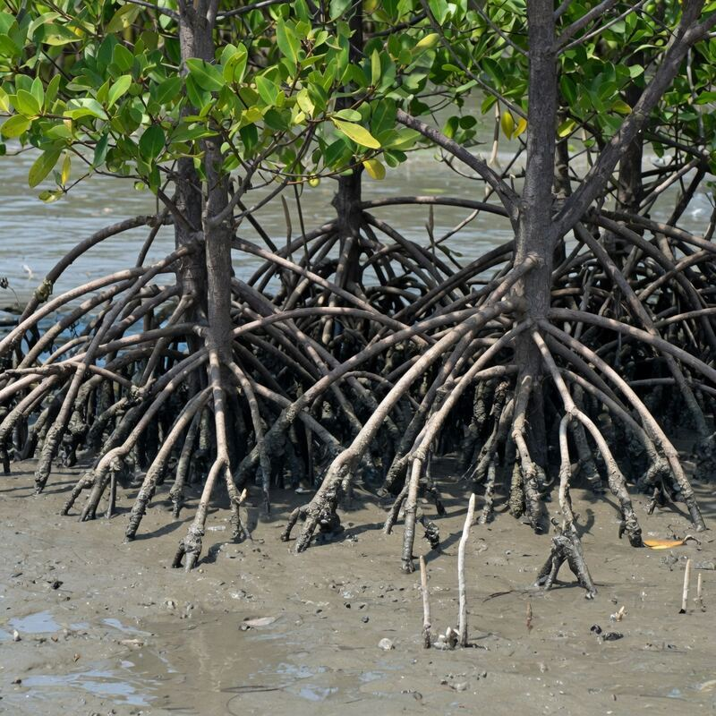
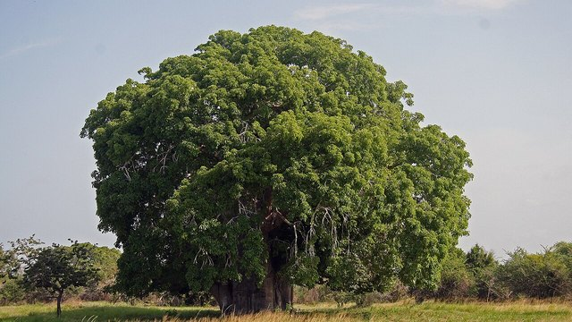

生命5–11 岁本地观察
红树观察站
红树是能泡在咸水泥里的木本：涨潮被淹，泥里几乎没有空气。呼吸根、支柱根把换气面抬到空气侧，像通气管；种子常常先在树上发芽，再掉进泥里扎根。它不是海草，也不是淡水河边的普通树。本页练「伸出换气、胎生苗不是小树枝」；栈道远观，不踩泥、不折苗。台上「通气」数字只是比较尺子，不是某一种的说明书，更不是采集课。
这一棵更像红树吗


点一张图鉴，看它更像会伸出呼吸根的红树，还是海草、松树或瓶子。再点另一张来比较。
红树通气台 · 真参数
调呼吸根数量与露出水面。淤泥缺氧又偏咸，根要伸出水面换气；红树是海岸工程植物，不是海边装饰可乱采。
淤泥缺氧，根要伸出水面换气。不是海边装饰。
先猜一猜，再拖滑杆
第 1 题：呼吸根够、露出够（呼吸根 32、露出 10）。根伸出水面换气，还是装饰根？
先押一个，再拖到 呼吸根数量 32、露出水面 10。
第 2 题：呼吸根 6、露出 4，还够氧吗？
押好后拖到 呼吸根数量 6、露出水面 4。
第 3 题：呼吸根最少 4、露出最弱 2。还能明显够氧吗？
押好后呼吸根 4、露出 2。
红树图鉴
下面有 12 张卡。点两张不一样的，再说谁更像红树这种「咸水淤泥里、根会露头换气」的树。塑料瓶不是红树。
还没选。先点一张，再点另一张，比谁更像红树。
猜一猜
红树的根为什么常常伸出水面或支在淤泥上？
先押一个，再点「看答案」。
任务：比谁更像红树
点两张不同的图鉴，再说出谁更像红树这种咸水淤泥里、根会露头换气的树。塑料瓶不是红树，请换呼吸根、支柱根或红树来比。
开放式提示不会代替上面的正式任务。
尚未完成：先点两张卡，再说谁更像红树。
根伸出水面换气；种子在树上发芽再掉进泥里
先点「呼吸根」，再对照「海草」。红树是有木头树干的树，脚站在涨潮会淹的咸水泥里。泥里几乎没有空气，普通深根闷在水下换不上气；呼吸根、支柱根把换气面抬到空气侧，像一根根通气管。盐是另一道难题：有的叶子把盐吐到表面像一层霜，不同种类办法不一样。呼吸根主要把氧补进泥里的根，不是一根管子专门用来把盐排掉。
交织的根网把浪的力气散开，泥沙被抓住，幼鱼和蟹苗躲在根做成的迷宫里。许多种类种子胎生苗还挂在树上就开始发芽，掉进泥里更能站住，不是可以折的小树枝——那是胎生苗，不是可以折的小树枝。红树不是通体红色的树，名字不要望文生义。
因为气根伸出才换得上气，所以不踩红树林泥、不折胎生苗、不挖根当纪念品。填海挖塘会拆掉这道活护岸，浪就直接打到社区，不是「少几棵树」而已。台上「通气」读数只比较「根露出多少」，不是某一种的说明书，更不是采集课。
根伸出水面换气；种子在树上发芽再掉进泥里
同一片潮间带，只看根露不露：涨潮看哪些被淹，落潮看哪些短根伸出泥面。泥里缺氧又咸，根抬到空气侧才换得上气。这样比，才知道「露头」是通气管，不是树生病，也不是海草那种整株泡在水下。
完成句写「伸出换气」或「胎生苗先在树上发芽」。禁止「红树就是海草」和「折一根苗当纪念」。河边淡水树没有天天被咸潮淹没。栈道远观，不跨栏，潮泥会陷脚。
涨落潮改写可用的空气与盐度；出门前先查潮汐表，才知道根露不露。
呼吸根把换气口抬到空气侧，专为泥里的根补氧；看见短桩不要当成树生病。
种子还挂在母株上就开始发芽，掉进泥里更能扎住，不是可以折的小树枝。
幼鱼和蟹苗躲在根做成的迷宫里避浪，也躲开捕食者，根网是三维的家。
支柱根和呼吸根织成网，抓住泥沙、把浪的力气散开，风暴来时替岸边挡第一道。
不折呼吸根、不挖还挂在树上的胎生苗当纪念品；栈道远观、记下时间就够。
- 认生境。说出两个难题：泥里缺空气，水又咸。
- 找根形。呼吸根换气，支柱根把树干撑在泥上。
- 比邻居。海草整株泡水下；河边树泡淡水，不天天被咸潮淹。
- 写完成句。点名伸出换气或胎生苗，并写下「不踩不折」。
红树长在海边泥里，根会伸出地面呼吸；种子有的还在树上就发芽。我们远远看，不踩不折。
潮间带又咸又闷。呼吸根主要补氧，不是排盐。胎生苗先在树上发芽再掉进泥里。根网挡浪，小鱼躲在里面。不要和海草、淡水河边树混名。
拒盐、泌盐因种而异。泥里的还原产物在根际被部分氧化。填海挖塘拆掉护岸，风暴浪由社区承担。本页通气读数只比较根露出多少。观林礼貌：栈道不跨栏、不折苗。
这在教什么：孩子要能把气根说成通气管，把胎生苗说成先在树上发芽，并否定「它是海草」。完成看的是盐与氧两道题，不是背「红树」两个字。
- 本页比的是纸呼吸根把换气面抬到空气侧才泡得住咸水泥，还是淡水河边那种普通树？
- 胎生苗是小树枝吗？它为什么先在树上发芽？
- 它是海草吗？河边淡水树能天天泡在咸潮里吗？
- 为什么不能踩气根、折胎生苗？踩断一根通气管会怎样？
盐与氧是两道题；呼吸根主要补氧
高盐会把细胞里的水抽走，红树用拒盐、吐盐、隔盐等几招对付，因种而异。教学层先记住：它要同时对付盐和缺氧。完成句写「呼吸根主要补氧，不是用来排盐」。
泥里还有发臭的还原产物，根周围先氧化一层才比较安全——根也是化学边界。养殖池和港口填海会直接拆掉这片林子；公众能做的从认潮汐、走栈道、不跨栏开始。
它是陆和海中间的林子，不是深海里的珊瑚礁，也不是海洋页里更外面的海。绿的水下叶子多半是海草：整株泡着开花，不长树上根桩。
因为气根伸出才换得上气，所以不踩红树林泥、不折还挂在树上的胎生苗。本页通气读数只比较根露出多少，不是填海许可证。

不同种类对付盐的办法不一样：有的拒、有的吐，不要写成全林子只有一招。
呼吸根主要把氧补进泥里闷着的根；排盐常是叶子的事，不要写成一根管子两用。
泥里还原产物发臭，根周围先氧化出一层才比较安全——根也是化学边界。
填海挖塘会拆掉这道活护岸，浪就直接打到社区，不是「少几棵树」而已。
它是陆和海中间的潮间带林子，不是深海里的珊瑚礁，也不是淡水河边树。
养殖池和港口填海会直接拆掉整片林子，护岸和幼鱼的家一起没了。
对照卡：伸出换气 · 海草全淹 · 河边淡水
三列拆「长在水边」。甲：红树是木本，潮间咸水泥，呼吸根换气，胎生苗先在树上发芽。乙：海草整株泡在水下开花，叶子像带子，不长木头树干，也不长树上根桩。丙：河边树泡淡水，没有天天被咸潮淹没。否决句：「红树就是海草」或「红树一定通体红色。」
完成时三行各写水咸不咸、常不常淹、根怎么站。混成「都是水边的树」就打叉。塑料瓶会卡住小鱼，不是树。本页读数只比较通气方向，不是物种鉴定。
红树把呼吸根伸出水面换气，像一根根通气管，不是海草那种整株泡着。

海草整株泡在水下开花，叶子像带子，不长木头树干，也不长树上根桩。
河边普通树泡在淡水里，没有天天被咸潮淹没，根也不会露头当通气管。
三行各写水咸不咸、常不常淹、根怎么站；红树不是海草，混成「都是水边的树」就打叉。
红树是能泡在咸水泥里的木本，不要和淡水河边的普通树、海草混成一个名。
河边树也有木头导管，却扛不住长期咸水浸泡，不能因为都是树就混名。
潮汐窗口三分钟：只写时间，不标精确地点
查当日潮位，涨潮前或落潮后各看大约三分钟：记下水位、露出的根、有没有跳鱼或蟹。远距拍两张全景，只写时间，不要标精确坐标。完成句写「根伸出水面换气，不是海草。」
口头只要两句：「泥里缺空气，根才露头。」「胎生苗不是小树枝。」有人说「它是海草」，让孩子指着木头树干和露出的根反驳。
不进入封闭保护区，栈道外不跨栏，不折胎生苗。通气管怎么露出才进气，去通气管工坊对照。本页数字不要抄进采集手册。
涨潮前或落潮后各看大约三分钟，记下水位，以及哪些呼吸根露出泥面在补氧。
远距拍两张全景，只写日期和时间，不要标精确坐标，也不要踩进潮泥。
不要跨出栈道：潮泥会陷脚，踩一脚就可能折断呼吸根，等于拆掉补氧口。
因为气根伸出才换得上气，所以不踩红树林泥、不折还挂在树上的胎生苗。
计时大约三分钟拍两张远景，只写时间，别写精确坐标，更不要折胎生苗带走。
海洋页讲更外面的开阔海，这里是涨落潮之间的林子，两页不要并成一处。
怎样才算公平的一次比较
想知道「根露头是不是树生病」，就只改这一项：同一片泥，先看根伸出时能不能换气，再想象根全闷在水下。把「它是海草」叠进同一档，分不清到底是通气管，还是分类错了。
- 只改这一项：根露在空气侧还是全闷在泥里（或只比咸潮与淡水）。
- 先保持不变：同一棵红树、同一片潮间带、同一次涨落。
- 要观察的：短根有没有伸出泥面；胎生苗是不是还挂在树上。
- 另开一行：海草全淹、河边淡水树、填海护岸，不要和「通气管」叠在一起。
还可以问下去
- 涨潮时主茎被淹，它靠什么「呼吸」？呼吸根主要补氧还是排盐？
- 胎生苗为什么先在树上发芽？折一根下来，无根阶段会变长还是变短？
- 填掉红树林，风暴来时谁替社区挡第一道浪？栈道观鸟和踩根自拍，哪个留得住林子？
- 海草整株泡着开花，红树有木头树干：混名叫「都是海里的草」，会保错哪一层？
- 为什么只写观察时间、不标精确坐标？公开地点和折一根苗，哪一件先伤林子？
- 台上「通气」数字能当某一种的说明书吗？它比较的是根露出多少，还是采集课？
按年龄分层的讲法
同一个现象，三个年龄段讲到哪一层。建议只讲孩子当前那一层，讲完就停，不要把泌盐机制提前塞进四岁耳朵。
红树长在海边泥里，根会伸出地面呼吸；种子有的还在树上就发芽。我们远远看，不踩不折。
泥里缺空气又咸。呼吸根主要补氧。胎生苗先在树上发芽再掉进泥里。不要和海草、淡水河边树混名。本页数字只用来比较通气，不是说明书。
拒盐泌盐因种而异。根网同时固土、消浪、做三维栖息地。填海代价常被低估。观林礼貌：不踩泥、不折苗、不跨栏，是在保护通气管和定植，不只是礼貌。
给家长的问题
- 涨潮时主茎被淹，它靠什么「呼吸」？呼吸根主要补氧还是排盐？
- 海草全在水下，红树半水半陆——各写一句适应。能混名吗？
- 胎生苗是小树枝吗？先在树上发芽，掉下去少了哪一段脆弱期？
- 填掉红树林，风暴来时谁替社区挡第一道浪？踩断一根呼吸根是小事吗？
- 「红树一定通体红色」怎样纠正？名字是颜色还是生境？
- 本页「通气」读数能当某一种的说明书吗？它比较的是根露出多少，还是采集课？
- 栈道观鸟和踩根自拍，哪个留得住林子？为什么不标精确坐标？
背后的原理
舞台上不写这些词，留给孩子用眼睛看。家长可以指着图讲：潮间带泥里缺氧又咸，气体扩散慢，把换气面抬到空气侧是物理约束下的解法。呼吸根主要补氧，盐另有拒盐、泌盐等招。红树是木本，不是海草，也不是通体红色的树。
本页「通气≈呼吸根×露出÷16」只是比较尺子，用来让孩子看见「露出才进气」，不是某一种的说明书，也不是采集课。交织根网同时固土、消浪、做幼鱼庇护所。胎生苗缩短无根幼苗期，提高在不稳定泥面上的定植率。
填海、养殖池和污染是直接杀手。破坏后护岸损失常被低估。它是陆海过渡带，不是深海珊瑚礁替身。
观察安全：栈道远观、不跨栏、不踩泥、不折胎生苗、不挖根。本页不教采集。
红树公式卡 · 通气≈呼吸根×露出÷16；通气≥10 泥里更够氧；伸出水面换气
真实还靠泌盐与胎生幼苗。因为气根伸出才换得上气，所以不踩红树林泥、不折还挂在树上的胎生苗。
接下来可以去
带走句：因为气根伸出才换得上气，所以不踩红树林泥、不折还挂在树上的胎生苗。海草页看有根有花的浅海植物；通气管工坊只练「露出才进气」。